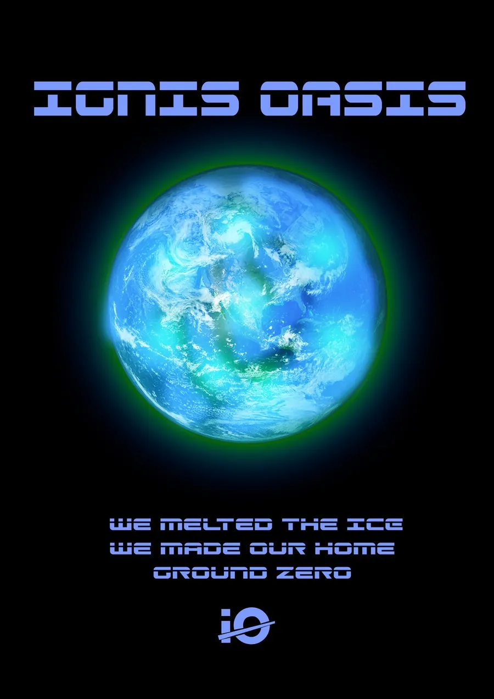
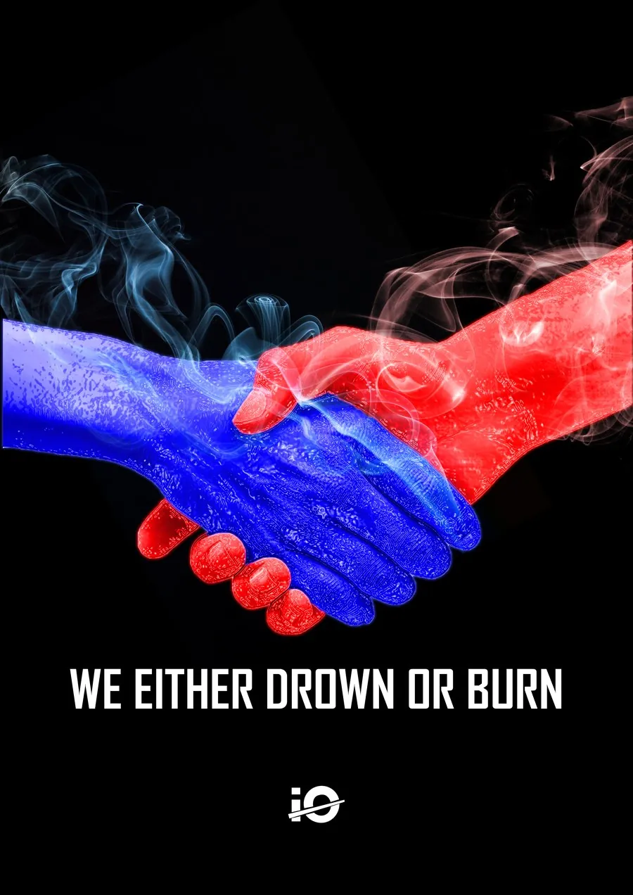
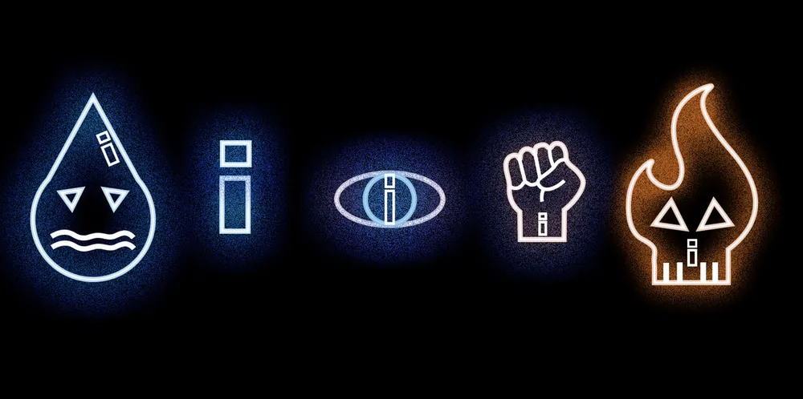

브랜드 가이드라인 · 2024.10 – 2025.01 · 개인
Ignis Oasis — 기후 위기 인식 캠페인
가상의 기후 행동 단체를 위한 아이덴티티를 만들었습니다. 매니페스토와 슬로건 "If we burn, you burn with us"에서 출발해 로고, 아이콘 5종, 15색 팔레트, 포스터, 22초 모션 인포그래픽으로 넓혔고, 로고 최소 크기(202×133px)와 대체 서체 순서까지 19쪽 가이드라인으로 정리했습니다.


